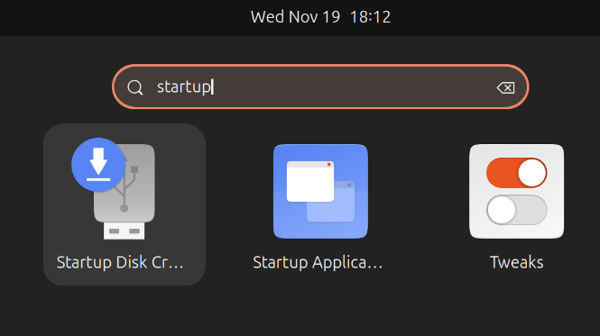
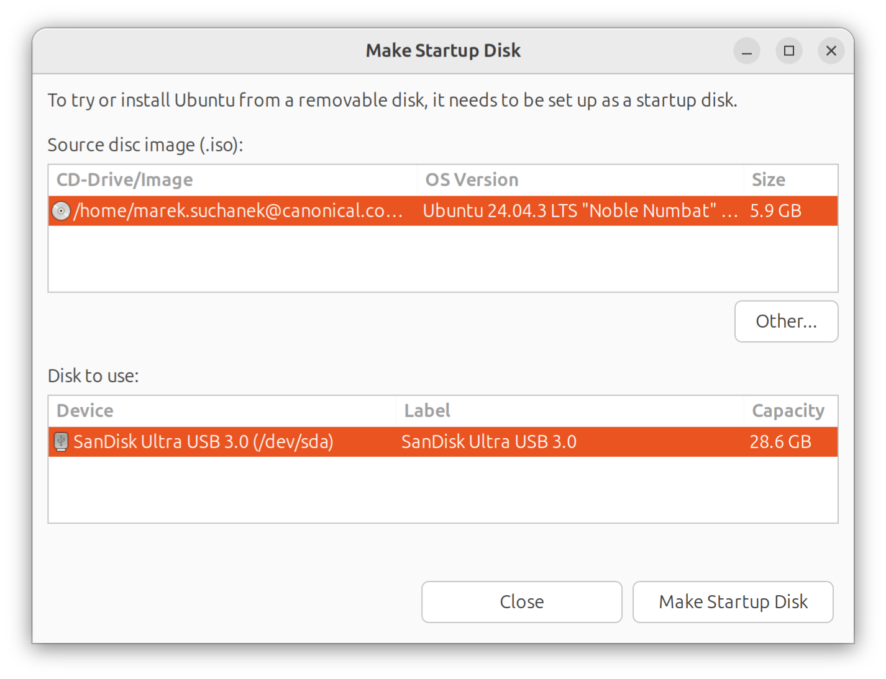
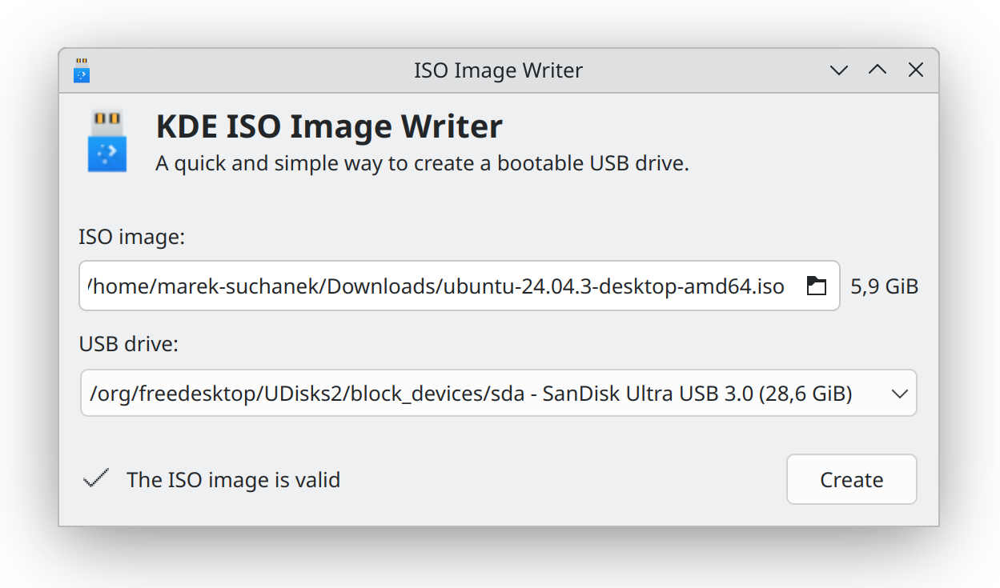

Create a bootable USB stick¶
You can convert your USB stick (USB flash drive) into Ubuntu installation media. This is different from copying a file to the USB stick. Instead, use a specialized application to rewrite your USB stick with Ubuntu. Select an application depending on the system that you’re currently using.
With a bootable Ubuntu USB stick, you can:
Install or upgrade Ubuntu.
Test out the Ubuntu Desktop experience without touching your PC configuration.
Boot into Ubuntu on a borrowed machine.
Use tools from the USB stick to repair or fix a broken configuration.
You need:
An 8GB USB stick or larger.
警告
Back up your files on the USB stick. This process will overwrite and destroy all data stored there.
An Ubuntu image file. See Download Ubuntu Desktop.
Take note of where your browser saves the downloaded file. This is normally a directory called Downloads. Don’t download the ISO image directly to the USB stick.
Proceed only when the download has successfully finished.
On Ubuntu and other Linux distributions¶
Ubuntu Desktop comes with the Disks application by default, which you can use to write the image. Other Linux distributions provide a wide range of different image writer applications. Choose the first one that’s available on your system.
Using Disks¶
The Disks application is installed by default on Ubuntu Desktop and on most Linux distributions that use the GNOME desktop environment. We recommend choosing it if it’s available on your system.
Disks can also write images of any other operating system, including Linux distributions or Microsoft Windows.
Open the Disks application. You can find it in the applications menu or by searching for 「Disks」.
Insert your USB stick. It appears in the sidebar. Select it there.
警告
Make sure to select the USB stick and not the disk with your running system. Both are listed.

Close all applications that access files or folders on the USB stick, including the file browser.
In the Disks window header, click Drive Options (⋮) and select Restore Disk Image…

Next to Image to Restore, select the downloaded Ubuntu image file.
Click Start Restoring… and confirm. The application asks for your password.

A progress bar appears while Disks is writing the image.

When the progress bar finishes, click Eject this disk (⏏).

Using Startup Disk Creator¶
The Startup Disk Creator application is part of the extended Ubuntu Desktop installation. You can use it to write an Ubuntu image to a USB stick.
警告
Startup Disk Creator is intended for Ubuntu images and images of other distributions based on Ubuntu, such as flavors like Kubuntu or Xubuntu, or derived distributions. It might not work correctly with other Linux distributions and different operating systems.
Insert your USB stick.
Close all applications that access files or folders on the USB stick, including the file browser.
Search your applications for Startup Disk Creator.

If the application isn’t available, install it in the App Center.
Alternatively, you can install it on the command line:
$Open Startup Disk Creator.
Check the Source disc image and Disk to use fields.
It’s likely that your Ubuntu image and the correct USB device have been detected. If not, use the Other button to locate your image file and select the USB device that you want to use from the list of devices.

Click Make Startup Disk and confirm that this is the correct USB device.
Any data currently stored on this device will be destroyed.
The write process starts and a progress bar appears.
When finished, the application announces 「Installation Complete」.
Using KDE ISO Image Writer¶
KDE ISO Image Writer is part of the KDE Plasma desktop environment. You can use it on distributions like Kubuntu. It’s available for Ubuntu and Kubuntu 26.04 LTS and later.
Go to the releases.ubuntu.com website and find the Ubuntu release that you’re writing on your USB stick, such as Ubuntu 26.04 LTS (Resolute Raccoon).
Download the
SHA256SUMSandSHA256SUMS.gpgchecksum files. In the file selector, make sure not to attach the.txtsuffix to theSHA256SUMSfile. Place the files in the same directory as the Ubuntu image.KDE ISO Image Writer uses these files to verify the Ubuntu image.
Insert the USB stick.
Close all applications that access files or folders on the USB stick, including the file browser.
Install KDE ISO Image Writer in the Discover app store or on the command line:
$Open KDE ISO Image Writer.
In the ISO image field, select the downloaded Ubuntu image. KDE ISO Image Writer starts verifying the image according to the checksum files.
In the USB drive field, make sure that the correct USB stick is selected.

Click Create to start writing the Ubuntu image to USB. Confirm with your password.
When KDE ISO Image Writer finishes writing, click Close.
Using the Linux command line¶
The dd image writer is available on all Linux systems. You can use it even on minimal systems without any graphical environment.
警告
The dd tool is designed for advanced users. If you specify the wrong options, disk or file names, you might destroy your running system.
Insert your USB stick.
Make sure that the USB stick is large enough for the Ubuntu image. If it’s too small, the image writer might silently fail.
List storage devices on your system:
$NAME HCTL TYPE VENDOR MODEL REV SERIAL TRAN sda 0:0:0:0 disk SanDisk Ultra USB 3.0 1.00 4C530000010118116183 usbIn this example, one USB stick is connected. Note down its device name at the start of the line, such as
sdahere.Unmount all file systems on the USB stick:
$Replace
sdawith the USB device name.Write the Ubuntu image to the USB stick:
$Double-check the file paths in this command:
The
ifargument specifies the 「input file」, or the path to the Ubuntu image.The
ofargument specifies the 「output file」, or the path to the USB device. Make sure that this is the correct device.
The remaining arguments are optional:
bs=4Mincreases the write performance,conv=fsyncensures that all data is written when the command finishes, andstatus=progressshows progress information.The
ddtool reports when the writing is finished:$6337593344 bytes (6.3 GB, 5.9 GiB) copied, 143 s, 44.3 MB/s6345887744 bytes (6.3 GB, 5.9 GiB) copied, 143.302 s, 44.3 MB/s 1512+1 records in 1512+1 records out 6345887744 bytes (6.3 GB, 5.9 GiB) copied, 286.923 s, 22.1 MB/s
Inform your running system of the changes on the USB stick if you want to examine the Ubuntu media:
$
On Windows¶
On Microsoft Windows, you have to install a third-party application for writing images to USB sticks.
Using Rufus¶
You can create a bootable USB stick using Rufus, a free and open source USB stick writing tool.
Download and install the latest version of Rufus from the rufus.ie website.
If you’re using Windows 7, install version 3.22 of Rufus. On Windows XP or Vista, install version 2.18.
Launch Rufus. If prompted, allow online updates.
備註
Rufus presents many options in its interface. It’s safe to leave most of them with their default values.
Insert your USB stick. It appears in the Device field.
If Device shows the wrong USB device, select the correct one from the drop-down menu.

Click SELECT next to Boot selection. Choose the Ubuntu image file that you’ve downloaded and confirm by clicking Open.
If the button reads DOWNLOAD instead, click the dropdown and change it to SELECT first.

If you’ve already tried Rufus and the USB stick failed to boot on your system, change Partitioning scheme to GPT and check that Target system is set to UEFI (non CSM). This works on modern systems that disable legacy compatibility.
Click START to write the image to USB.
Rufus tells you that the Ubuntu image is an ISOHybrid image. This means that the same image file can be used as the source for both a USB stick and a DVD.
Confirm the Write in ISO Image mode option.

If Rufus asks to download additional files to complete writing the image, select Yes to continue.
Rufus warns you that all data on the USB device is about to be destroyed. Double-check that you’ve selected the correct device and confirm by clicking OK.

Rufus is now writing the image to USB. This usually takes around 10 minutes.

When Rufus has finished writing to the USB device, the Status bar says READY.
Click CLOSE to complete the write process.

On macOS¶
On macOS, you have to install a third-party application for writing images to USB sticks. Alternatively, you can use the built-in dd tool on the command line.
The USB stick will work on PC (Windows) hardware and older Apple hardware based on Intel CPUs.
If you want to run Ubuntu on Apple Silicon hardware, such as recent Macs using M1 CPUs or later, refer instead to the Ubuntu Asahi community project, which isn’t supported by Canonical. The hardware support might be limited and depends on your specific machine. For example, Ubuntu Asahi 25.10 only runs on systems with M1 and M2 CPUs.
You can also install Ubuntu in a virtual machine on top of your current system using Multipass.
Using balenaEtcher¶
You can create a bootable USB stick using balenaEtcher, a free and open source USB stick writing tool.
Insert the USB stick.
At the balenaEtcher website, download Etcher for macOS (arm64) if you’re using an Apple Silicon machine, or download Etcher for macOS if you’re using an Intel Mac.

Install and open balenaEtcher.
Click Flash from file and select the downloaded Ubuntu image.
By default, the image file will be in your Downloads folder.
Click Select target and choose your USB stick.

Click Flash! to write the image to USB.
Using the macOS command line¶
If you feel confident using the macOS command line, you can follow a more manual approach using the dd tool.
警告
The dd tool is designed for advanced users. If you specify the wrong options, disk or file names, you might destroy your running system.
Open the Terminal app.
List the current devices:
$Insert your USB stick.
List the current devices again. Determine the device name assigned to your USB stick, such as
/dev/disk2:$/dev/disk0 (internal, physical): […] /dev/disk2 #: TYPE NAME SIZE IDENTIFY 0: FDisk_partition_scheme *4.0 GB disk2 1: DOS_FAT_32 USB CLE 4.0 GB disk2s1
Make sure that the USB stick is large enough for the Ubuntu image. If it’s too small, the image writer might silently fail.
Unmount the USB stick:
$Replace
<N>with the disk number from the last command, such as2.You might see this error: 「Unmount of disk
failed: at least one volume could not be unmounted」. Open the Disk Utility and unmount the volume (don’t eject). Write the Ubuntu image to the USB stick:
$小訣竅
Drag and drop the image file from Finder to Terminal to paste the full path. This way, you prevent potential errors when typing the path.
Double-check the file paths in this command:
The
ifargument specifies the 「input file」, or the path to the Ubuntu image.The
ofargument specifies the 「output file」, or the path to the USB device. Make sure that this is the correct device.We’re using the
/dev/rdisk<N>device here rather than/dev/disk<N>. This refers to a 「raw device」 interface to the same disk, which is faster.
The
bs=4moption increases the write performance and it’s optional.You might encounter these errors:
dd: Invalid number '4m'You’re using GNU
dd. Use the same command but replacebs=4mwithbs=4M.dd: /dev/disk<N>: Resource busyMake sure that the disk is not in use. Open the Disk Utility and unmount the volume (don’t eject).
Unmount the USB stick:
$Remove the USB stick when the previous command completes.
On multiple platforms¶
If the previous applications didn’t work or you have a special use case, we also suggest the following multi-platform image writers.
Ventoy¶
Ventoy is an open-source tool that you install on your USB. You can then copy image files to the USB storage using your normal file browser. When you boot the system with the USB stick inserted, Ventoy lets you choose among all the image files stored on the USB.
For instructions, see the Ventoy documentation: Start to use Ventoy.
Ventoy is available for Linux and Microsoft Windows.
警告
Ventoy 1.1.11 (released Apr 2026) has a known issue that prevents Ubuntu from installing correctly. We recommend using a different Ventoy release or another USB creation tool.
balenaEtcher¶
balenaEtcher is a simple open-source USB stick writing tool. It’s available for Windows, macOS and Linux.
See the documentation at etcher-docs.balena.io.
WonderISO¶
WonderISO is a versatile and easy-to-use tool that can write images to USB. WonderISO is available for Microsoft Windows and macOS as a proprietary (closed-source) application.
For instructions, see the WonderISO product manual.
Next steps¶
Congratulations! You now have Ubuntu on a USB stick, bootable and ready to go.
To use it you need to insert the stick into your target PC or laptop and reboot the device. It should recognize the installation media automatically during startup but you may need to hold down a specific key (usually F12) to bring up the boot menu and choose to boot from USB.
For a full walkthrough of installing Ubuntu, take a look at our 安裝 Ubuntu Desktop tutorial.
Finding help¶
If you get stuck, help is always at hand: